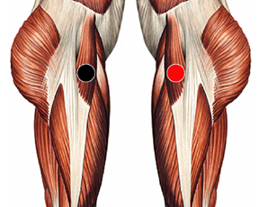

Gardenella vaginalis
Pares
tensor fascia lata - tensor fascia lata
peritoneo - apendice (Reservorio)

Generalidades:
Vaginitis, flujo vaginal nauseabundo, sangrado, abortos, infecciones vaginales. Produce parto prematuro . En el hombre se presenta con exceso de testosterona, Uretritis, prostatitis, incontinencia urinaria.
Forma de Trasmisión:
Trasmisión sexual (usar condón). Es parte de la flora de la vagina. Para las mujeres es recomendable mantener buen aseo, usar telas naturales como algodón, evitar prendas ajustadas.